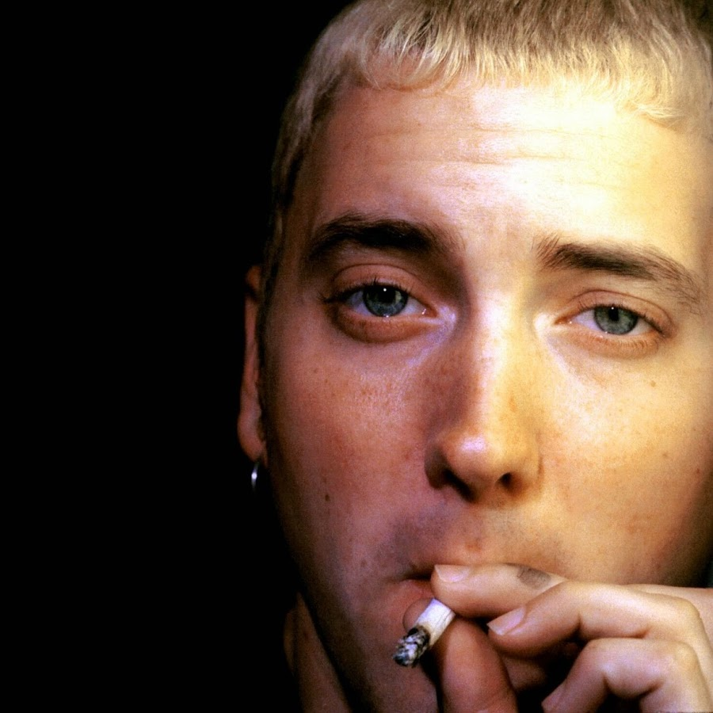
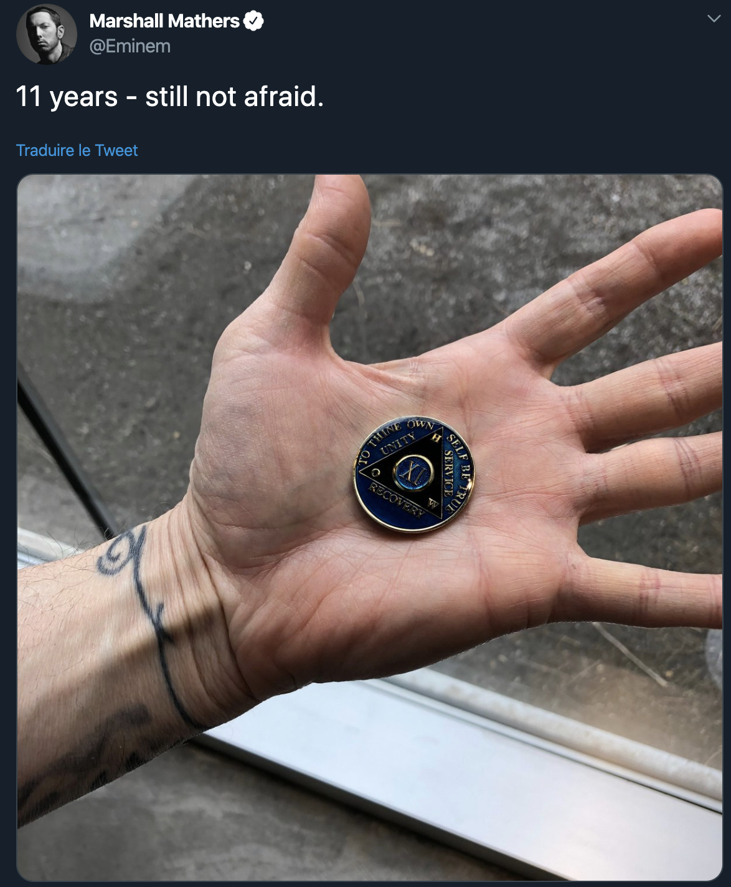

Eminem et la drogue


Sorti le 23 mai 2000, la musique Under the influence est la 17ème track de l’album The Marshall Mathers LP dans lequel il est en featuring avec son groupe D12. Cette musique est connue pour être entièrement dédié à la consommation de drogue, qui a bercé Eminem depuis petit. Les paroles sont tellement violentes qu’elles ont été soumises à une limite d’âge.
Cette violence est d’ailleurs perceptible dès le début du premier couplet puisqu’Eminem raconte la façon dont il a tué une personne à l’hôpital en la pendant aux rideaux. Il raconte qu’il aurait commis cet acte après avoir avalé 2 pilules ce qu’il lui aurait causé sur ses pupilles qui commençaient à enfler. Il dit d’ailleurs qu’il avait des hallucinations puisqu’il se sentait comme Clint Eastwood. Ce qui est passionnant avec ce couplet c’est qu’Eminem raconte parfaitement les effets secondaires de la prise de drogue. En effet, il dit que la consommation de pilule le pousse à en prendre davantage. Dans le cas contraire, il commençait à ne plus contrôler ses actes et à devenir violent en attaquant toutes les personnes présentes dans l’hôpital. C’est donc pour cela qu’il a tué une personne à l’hôpital. Les couplets suivants sont ensuite rappés par ses amis du groupe D12. Swifty McVay avoue fictivement ses crimes commis sous emprises de drogues. Il raconte que sous emprises de drogues il devient fou et se sent surpuissant et inarrêtables. Ce qui le pousse a violenté toutes personnes lui causant du tort. Le couplet suivant est celui de Bizarre dans lequel il parle des retombées de la prise de drogue qui peuvent être fatale. Il parle notamment de la violence sexuelle qu’il peut avoir après avoir sniffé de la cocaïne et pris des pilules. Il va même jusqu’à comparer une drogue à de l‘acide tellement les effets sont destructeurs. Enfin, comme dans toute la musique, on remarque un excédent de violence et de grossièretés afin de montrer que la drogue est en aucun bénéfique et qu’elle est au contraire destructrice. Pour finir, cette musique pousse en quelque sorte le fan à se mettre en question sur les risques de la drogue et le dégoûter au maximum à en prendre.
Afin de voir la violence de la musique, on revient sur quelques paroles assez marquantes :
« Two pills I pop, 'til my pupils swell up like two pennies »
Eminem fait référence à la dégradation corporelle à la suite de la prise de drogue. Lorsque les pupilles enflent cela explique un très mauvais fonctionnement du corps et cela peut être très dangereux s’il n’est pas soigné.
« I'm like a fuckin wasp in the hospital lost Stingin the fuck outta everything I come across in the halls »
Eminem parle ici de la dangerosité de la prise drogue qui rend violent et incontrôlable les personnes qui en prennent. En effet, les personnes qui en prennent ne sont plus totalement maître de leurs corps et donc la drogue peut les pousser à faire de très grosses bêtises uniquement pour que le corps prend de cette drogue et calme pour peu de temps l’addiction.
« Grab a knife at the blade and stab you with the fuckin handle »
Cette phrase accentue explicitement la violence liée à la prise de drogue. En effet, la drogue fait faire des choses irréparables et cela sans que notre cerveau soit totalement maître de soi.
BOUBEKRI Anass
Not Afraid est le premier single du septième album d’Eminem, Recovery. Cet album marque une rupture dans la vie d’Eminem, en effet son septième album devait s’appeler Relapse 2 (rechute en français) mais s’appellera finalement Recovery (guérison).
Le titre connu d’Eminem débute par le refrain, il n’a pas peur de prendre parti et de revenir sur ses précédentes paroles à propos des drogues. Non seulement il parle de sa guérison mais incite également ceux sui l’écoutent à le suivre et à faire de même, si Eminem est passé par là et s’en est sorti, eux aussi peuvent le faire.
S’en suit une intro dans laquelle Eminem fait référence à tous les évènements et difficultés qu’il a vécues. En repensant à ces moments il se dit qu’il a dû passer par cette période sombre pour en quelque sorte renaitre et motive encore une fois les gens qui passent par cette période sombre à se ressaisir et à trouver l’aide dont ils ont besoin.
Lorsqu’il entame le premier couplet, la première chose qu’il fait est inciter les fans à écouter ses paroles et non les lire. Ses paroles sont plus fortes et ont plus d’impact et d’intensité lorsqu’elles viennent de lui plutôt que si elles sont lues. De plus, Eminem insiste sur le fait que s’il rappe c’est d’abord pour lui et non pour les gens, il ne laissera pas les gens l’empêcher de diffuser son message et de toute façon « fuck the world ». Il réutilise ainsi encore une fois le fameux slogan de 2Pac. Il fait ensuite un jeu de mot avec « beans » (haricot) et « gas up » qui a un double sens car les haricots donnent des gas et cette expression veut également dire « faussement flatter l’ego ». Cela veut ainsi dire qu’il faut nourrir le monde avec des haricots pour leur donner des gas (et aussi flatter leur ego) et de ce fait empêcher les gens de l’arrêter. Il fait ensuite un pied de nez à « ceux qui le regardent de haut » et les menace de « détruire le balcon » depuis lequel ils l’observent.
Il fait une rétrospective depuis son premier album studio Infinite jusqu’à Relapse et fait référence à ses détracteurs qui l’ont critiqué tout au long de sa carrière. De ce fait, il prévient tout le monde qu’il est son seul amour est le rap (« he’s married to the game » : il est marié au rap) et qu’il rappera jusqu’à ce qu’il tire sa révérence ou meure sur les toilettes comme Elvis Presley et ce peu importe ce qui arrive en premier pour le meilleur et pour le pire comme dans tout mariage.
Cependant cet amour et ce talent pour le rap a un prix, c’est à la fois une bénédiction et une malédiction. En effet, le rap lui a apporté beaucoup de bonne chose mais aussi et surtout son addiction, avant son succès l’artiste ne se droguait pas. Il compare cela a un cadeau empoisonné comme un « fuck you » pour Noel, il parle ainsi de l’overdose qu’il a faite durant Noel 2007 ou il a frôlé la mort.
Dans le deuxième couplet, Eminem joue encore et toujours avec les mots. Il dit d’arrêter de jouer avec des ciseaux et de « cut the crap » qui signifie à la fois arrêter de dire des c*nneries mais aussi couper de la m*rde, c’est-à-dire couper le drogue (avec des ciseaux par exemple).
Il rappe ensuite en dehors du rythme et rime sur le fait de rapper hors du rythme, encore un élément qui fait d’Eminem un grand rappeur. Il y a également un jeu de mot entre « it’s a rap » (c’est un rap) et « it’s a wrap » (c’est la fin, c’est dans la boite).
Eminem démontre encore plus son talent d’écriture en combinant à la fois un homophone (feelings et fillings), un mot à double sens (crown=couronne de roi, couronne pour les dents) et un mot a triple sens (capped= se faire tirer dessus, une casquette, capuchon dentaire).
Il s’adresse ensuite directement aux fans en promettant de ne plus jamais les laisser tomber notamment à cause de ses deux derniers albums Encore et Relapse qui ont reçu de dures critiques, en effet il prenait des drogues a cette époque et était au plus mal. Il a été très incendié pour avoir utilisé beaucoup d’accents sur l’album Relapse, on apprendra plus tard que c’était parce qu’à cause de la drogue il n’arrivait même plus à rapper et que les accents l’aidaient à le cacher. Il rappe d’ailleurs cette ligne avec un accent pour en rire. Mais cette fois ci Eminem est de retour et ne décevra personne et c’est une promesse sur laquelle il ne reviendra pas.
Même si Eminem est sobre il sent toujours une ombre au-dessus de sa tête et ressent encore le besoin d’exorciser ses démons. Il dit lui-même qu’il ne peut plus vivre comme ça, à la fois pour lui et pour ses filles. Il s’en veut de les avoir fait traverser ces épreuves et veut remettre sa vie en ordre. Même s’il dit rapper pour lui-même Eminem a admis aussi être touché par ses fans et l’affection qu’ils lui portent mais aussi par l’amour de ses filles. Il dédicace une grande partie de sa guérison et de sa sobriété a ses fans qui l’ont soutenu tout le long (même si Relapse n’était pas son meilleur album, il est disque de platine et a remporté un Grammy). Eminem jure de produire de la bonne musique et d’assumer ses responsabilités de père à la fois.
Avec ce titre et cet album, Eminem marque là son grand retour et sa renaissance ; à la fois en tant qu’artiste mais aussi et surtout en tant qu’homme. De nos jours, cela fait 11 ans qu'Eminem est sobre.
AYACHI Hassina